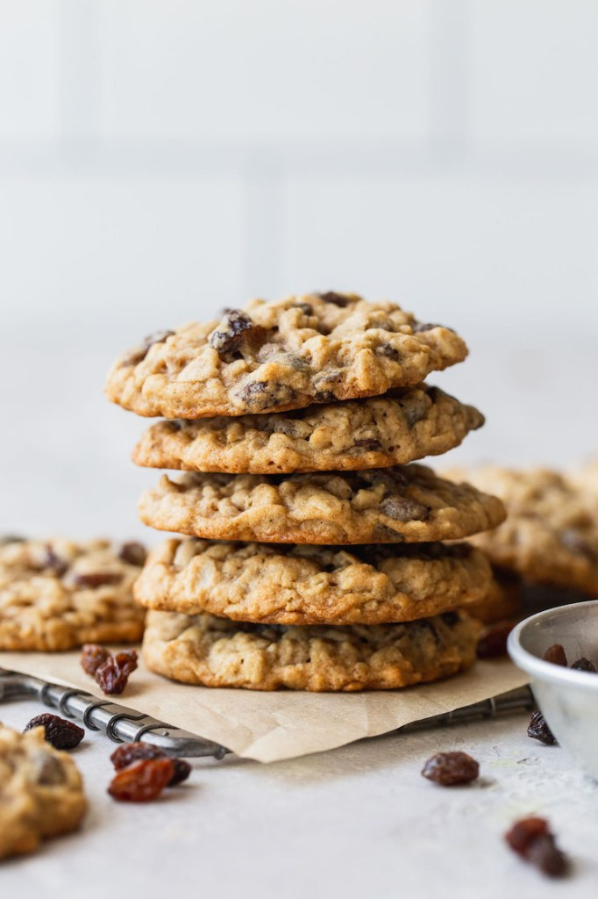

Oatmeal Craisin Cookies Recipe

Description
They're made with old-fashioned oats, brown sugar, and plenty of raisins. My favorite cookies in the whole wide world are these oatmeal raisin cookies. They're a little chewy in the center and a little crispy at the edges. Each bite is loaded with oats and sweet bursts of raisins.A natural palate DELIGHT!!!!!
Ingredients
- 1 cup butter, softened
- 1 cup packed brown sugar
- 1 cup white sugar
- 2 eggs
- 1 teaspoon vanilla extract
- 2 cups quick cooking oat
- 2 cups all-purpose flour
- 1 teaspoon baking soda
- 1 teaspoon baking powder
- 1 teaspoon salt
- 1 cup raisins
- 1 cup dried cranberries
Steps
- Beat butter, sugars, eggs and vanilla for 5 minutes. In another bowl, combine oats, flour, baking soda, baking powder, and salt. Add to butter mixture 1 cup at a time.
- Mix in raisins and craisins.
- Drop by spoonfuls onto greased cookie sheets and bake for 12-14 minutes at 350 degrees F (175 degrees C). These freeze very well. Enjoy!!